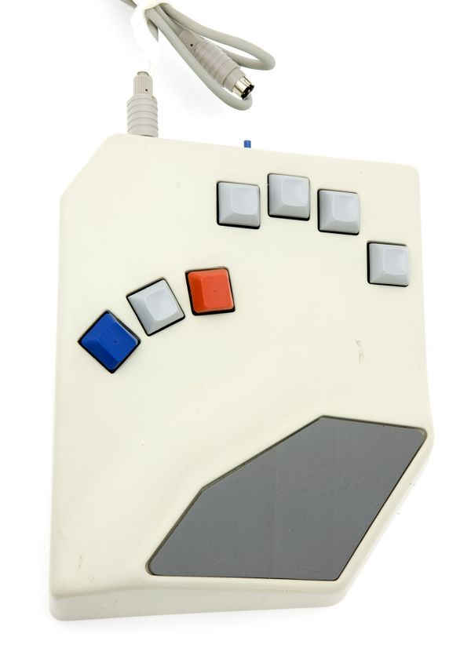

BAT Keyboard
Seven keys, one hand, and a tilt that says 'I was designed for a fighter jet cockpit.' NASA helped bring it to Earth.

Overview
The BAT Personal Keyboard, introduced by Infogrip at COMDEX Las Vegas in fall 1990, is a 7-key one-handed chord keyboard. It uses four finger keys and three thumb keys — red, grey, and blue — in a piano-chord arrangement that produces all 101-key keyboard functions through 180+ chord combinations. The keyboard sits on the desk at a 25-degree tilt with an integrated wrist rest, designed for natural hand geometry. Keycaps are mounted backwards (180° rotated) for an ultra-low profile, and the pinky key is taller to compensate for shorter, weaker fingers. Three layers of 1/8-inch EVA foam under each keycap absorb shock. Cherry MX Black switches are modified with exceptionally light springs — lighter than any stock Cherry switch — for minimal actuation force. The BAT originated in Israeli Air Force human-factors research (reducing fighter-jet control sequences from 32 to 12 seconds via chording), was developed with NASA's Stennis Space Center for both spacecraft interaction and assistive technology, and was manufactured by Infogrip from 1990 into the 2000s. Users could learn key combinations in about 45 minutes and reach 45 words per minute after about 45 hours of practice.
Deep dive
The BAT's chording system uses three thumb-key 'layers' to multiply its 4 finger keys into a full keyboard. Lowercase letters use finger keys plus the grey thumb key. Numbers and symbols are accessed through the red thumb layer. Modifier keys and navigation (Ctrl, Alt, arrows, Home, End, PgUp, PgDn) use the blue thumb layer with sticky-key behavior. This three-layer architecture means the user's hand never leaves the home position — every function is a chord. The keyboard also supported macro programming, with 32KB of battery-backed RAM for custom chord sequences.
NASA's Stennis Space Center partnered with Infogrip to develop chordic input technology, documented in the official NASA Spinoff 1993 publication (document ID 20020080924). NASA's dual interest was in faster human-computer interaction for spacecraft and a low-cost tactile training system for disabled users. The Spinoff entry notes: 'Using chordic technology, a data entry operator can finger key combinations for text or graphics input. Because only one hand is needed, a disabled person may use it. Strain and fatigue are less than when using a conventional keyboard; input is faster, and the system can be learned in about an hour.'
In 1992, Infogrip prototyped the InfoWear Hip PC — a PC clone worn in a fanny pack with the miniBAT (a battery-powered chord keyboard companion) and a Reflection Technologies Private Eye head-mounted display. This was one of the earliest documented wearable computing concepts to reach the prototype stage, predating the mainstream wearable computing movement by several years. Infogrip also developed the 'Intelligent Chair' concept with a major office furniture maker, placing BAT wings at the armrest ends.
Team & pioneers
- Ward Bond. President of Infogrip, Inc., led the BAT launch at COMDEX 1990
- Israeli Air Force Human Factors Specialist (unnamed). Originator of the chord design that reduced fighter-jet control sequences from 32 to 12 seconds
- NASA Stennis Space Center. Development partner for spaceflight and accessibility applications
- Robert Ramey. Later re-engineered BAT firmware as a one-chip PIC solution with USB HID
Media
Sources
- Computer History Museum: BAT Keyboard catalog #102662183
- CHM Revolution Exhibit: BAT Keyboard
- NASA Spinoff 1993: Chordic Input Technology
- TidBITS Oct 1990: Holy BATKeyboards! (COMDEX launch review)
- Hackaday Aug 2020: Inputs of Interest — The Infogrip BAT Chording Keyboard (teardown)
- Keyboard Wiki: BAT Keyboard (detailed specs and image gallery)
- Wikipedia: BAT keyboard